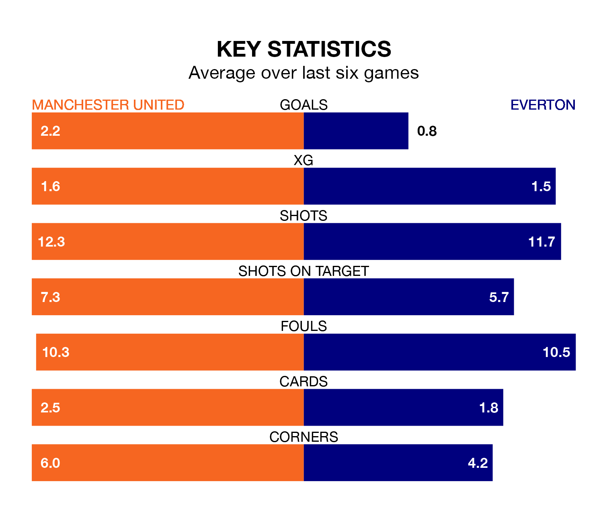

Everton travel to Old Trafford looking to secure a first win in 11 Premier League games against Manchester United on Saturday lunchtime.
The Toffees have lost five and drawn five matches since they last earned three points – against Burnley on December 16.
They face an United side who have won five and drawn one over that time.
In Jordan Pickford, Everton can rely on one of the league's safest pair of hands. He has kept eight clean sheets in his 27 appearances this season, and only one other 'keeper – Arsenal's David Raya – has been able to prevent the opposition scoring on more occasions in the Premier League.
In United's net, André Onana has seven clean sheets in 27 games. He has conceded a goal every 71 minutes, only slightly more often than the 74 minutes between goals for Pickford.
In the last 10 years, United and Everton have played each other on 23 occasions. United won 13 of them, Everton four, and they drew six times.
On average, the Red Devils scored 1.7 goals and the Toffees 1.0 in those matches.
Their last meeting was on November 26, when United won 3-0 away.
The Red Devils are sixth in the table after 27 games, of which they have won 14 and drawn two, earning 44 points.
The Toffees are seven places behind the hosts in 13th, with eight wins and seven draws putting them on 31 points.
With 29 goals in 27 games so far this season, the away side are the league's third-lowest scorers with 1.1 goals per game. But they are conceding fewer than average too, letting in 37 goals at a rate of 1.4 per game.
United are also below average scorers, with 1.4 goals per game, compared to a league average of 1.6. They have also conceded 1.4 goals per game.
United's last match was on Sunday, a 3-1 loss against Manchester City, with Marcus Rashford getting the goal for the Red Devils.
Everton lost 3-1 against West Ham United last time out, on Saturday, with Beto Bercique on the scoresheet.
Saturday's match will be refereed by Simon Hooper, who has taken charge of 17 Premier League games so far this season, issuing three red cards and booking 82 players. He has not awarded any penalties.
The last United game Hooper refereed was a 2-0 away loss to West Ham United on December 23. His last Everton match was their 1-0 loss at home against Arsenal on September 17.
Updated: 09:34 (UTC), 08/03/24